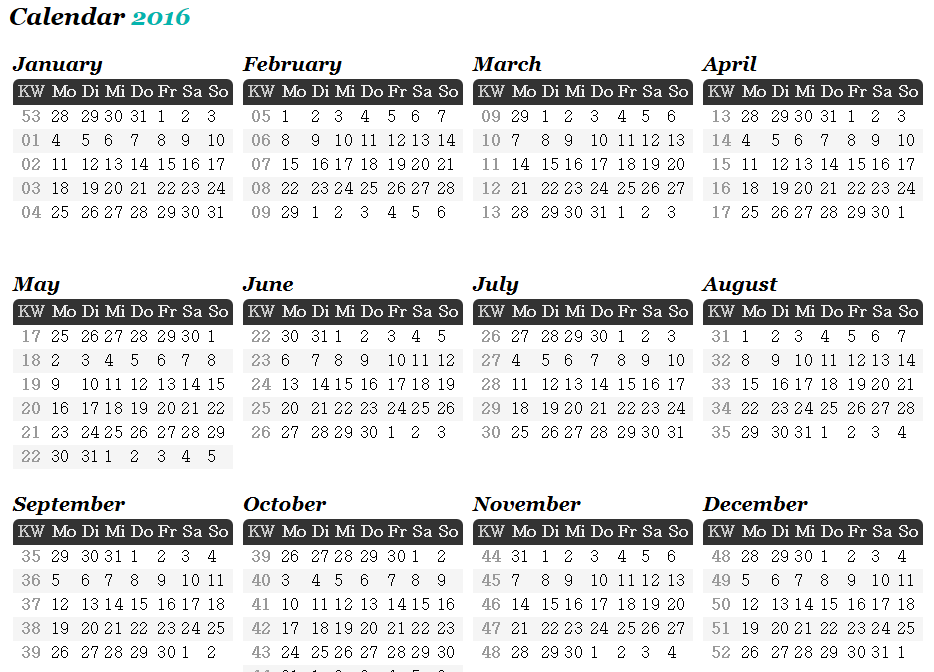
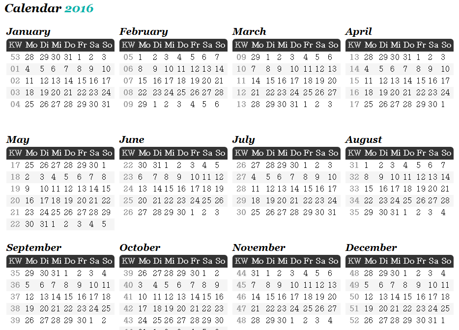

Ref : http://week-number.net/calendar-with-week-numbers-2016.html
The year 2016s maximum week number is WN 52. 2016 starts on Friday, January 1st 2016 and ends on Saturday, December 31st 2016.One year has up to 53 week numbers. The first week of the year (WN 1) is the week containing january 4th or the first tuesday of the Year.
1월 4일 또는 첫번째 화요일이 포함된 주가 W1

The year 2016s maximum week number is WN 52. 2016 starts on Friday, January 1st 2016 and ends on Saturday, December 31st 2016.One year has up to 53 week numbers. The first week of the year (WN 1) is the week containing january 4th or the first tuesday of the Year.
1월 4일 또는 첫번째 화요일이 포함된 주가 W1
